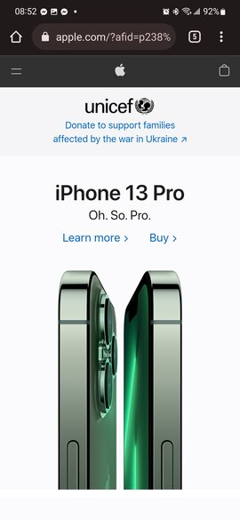

Samsung
samsung.com/us/Hick's Law, in principle, is the idea that the more choices you present your user with, the longer it will take for them to reach a decision. Samsung utilizes this principle quite well. When you go to their home page, you are presented with a single option right at the start: shop. They show you an appealing image with limited options, the highlighted one being to shop through their products.
Apple
apple.com The idea of white space is that, when you clutter a page with too much information, the user can be overwhelmed and not know where to focus their attention. A page with proper use of white space has only the most important things in focus at any particular time. Apple makes great use of this principle by having significant space to the left and right of the page while having a very focused design element right on the iPhone 13.
Amazon
amazon.comThe concept of visual hierarchy is such that design elements are used to emphasize which elements on the page are the most important, as well as those elements that might not be so important. Amazon's home page makes the most prominent element the search bar at the top since they want you to go shopping for stuff you immediately want. Next, less prominently are common or popular items on their page in case you need some ideas of what to get.